Walks through one security technique, capability-based sandboxing, in depth rather than a full multi-system architecture.
This traces the talk's throughline from threat to mitigation: hallucinated code and an overhelpful LLM justify default-deny capabilities, which pick isolates or containers, then per-user isolation and a secrets proxy close the loop (ours).
“What we are actually doing is running untrusted code from the internet.”
said at 01:35“It imports a package that does not even exist. Or it writes a recursive function with no base case.”
said at 03:08“it reads your API keys, your database credentials, and your secrets”
said at 04:11“Don't enumerate what to block. Enumerate what to allow.”
said at 08:27“Does the code need a file system, processes, or package installs? If yes, it's container. Full stop. If no, isolates.”
said at 31:23“Each user gets its own sandbox. The user ID is the isolation boundary. Never ever share sandboxes between users.”
said at 26:08“proxy through your worker. The sandbox makes a request to your worker's endpoint, something like a proxy endpoint”
said at 27:44“These eight things, if you do all eight, you are in a fundamentally better position than 95% of AI applications”
said at 35:01(ours) The isolates-vs-containers split maps directly onto Cloudflare's own product line (Workers isolates, Cloudflare Sandbox SDK/containers), so the specific tool recommendations are vendor-specific even though the underlying principles (capability-based security, secrets proxying, per-tenant isolation) are portable to any stack.
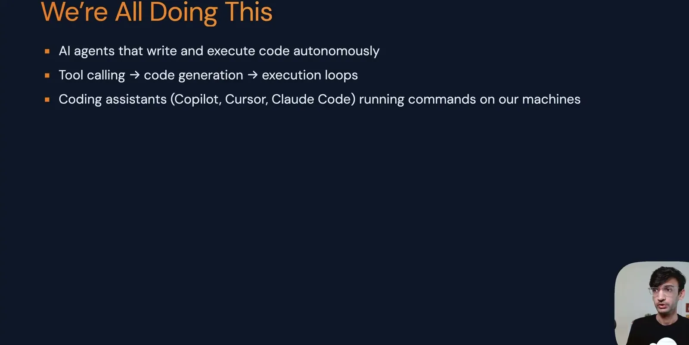
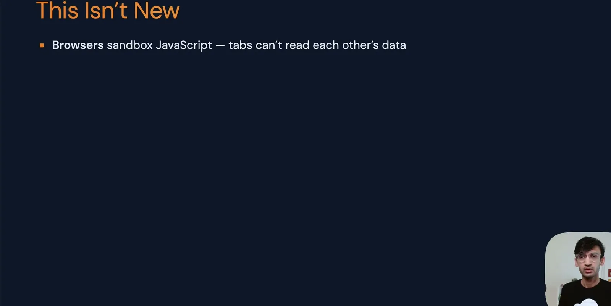
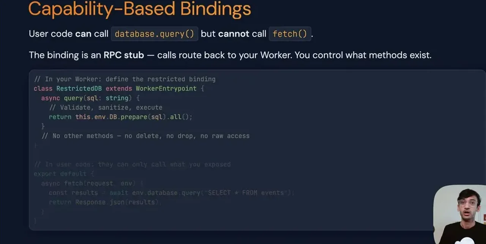
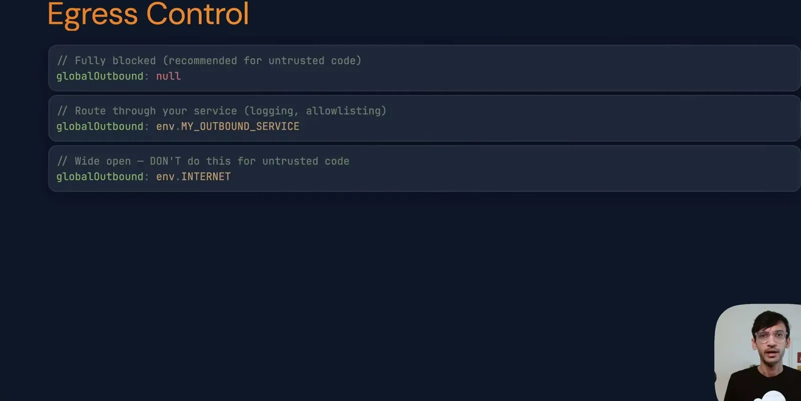
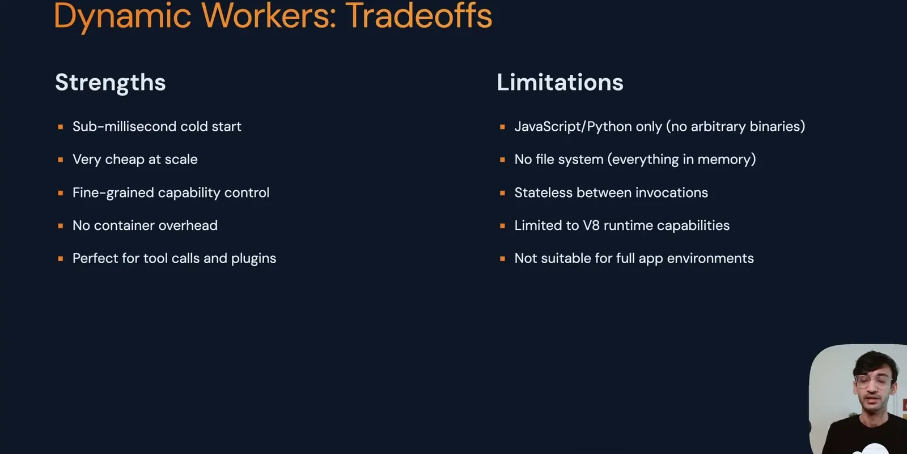
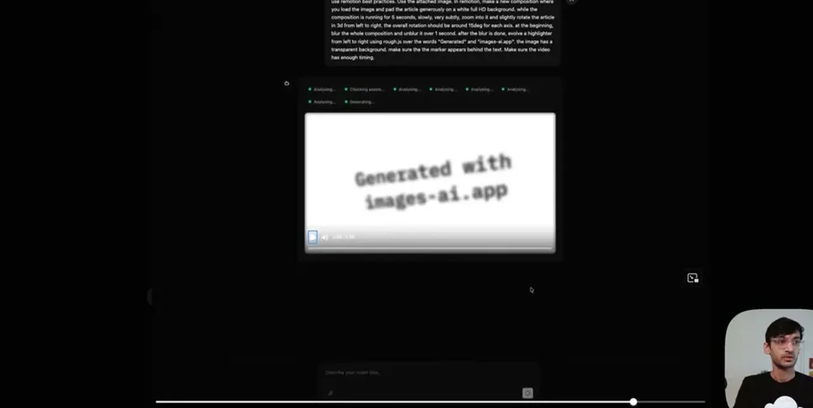
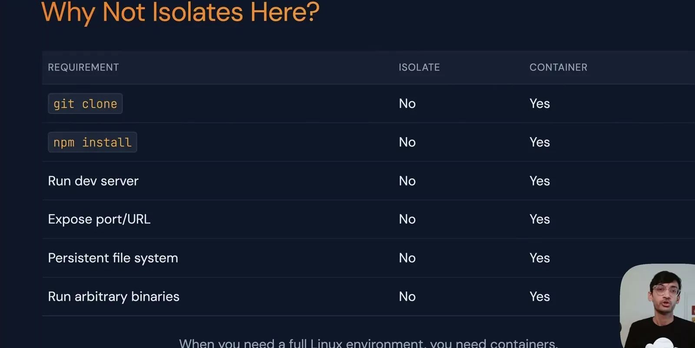
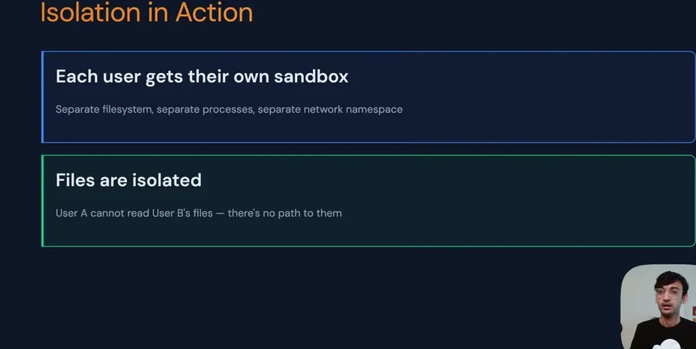
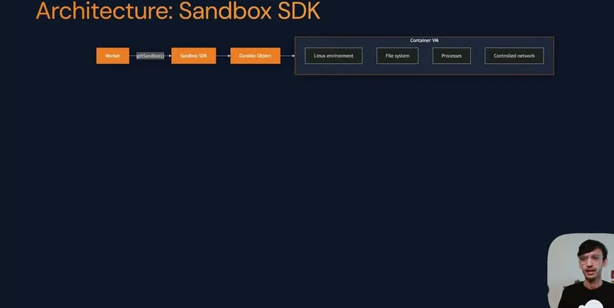
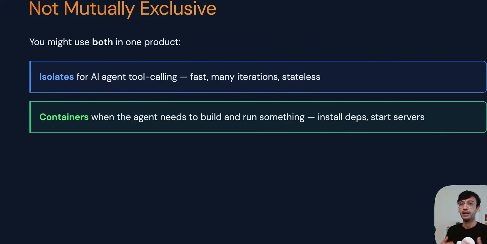
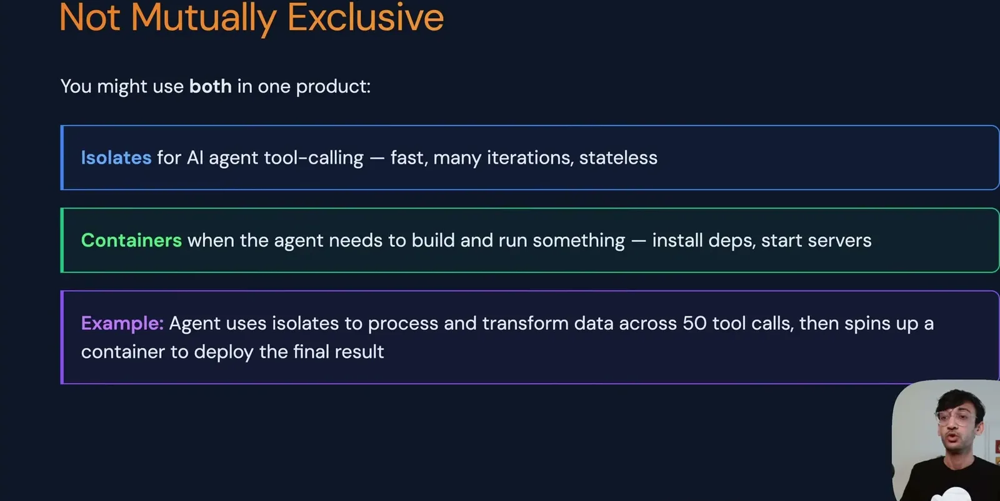
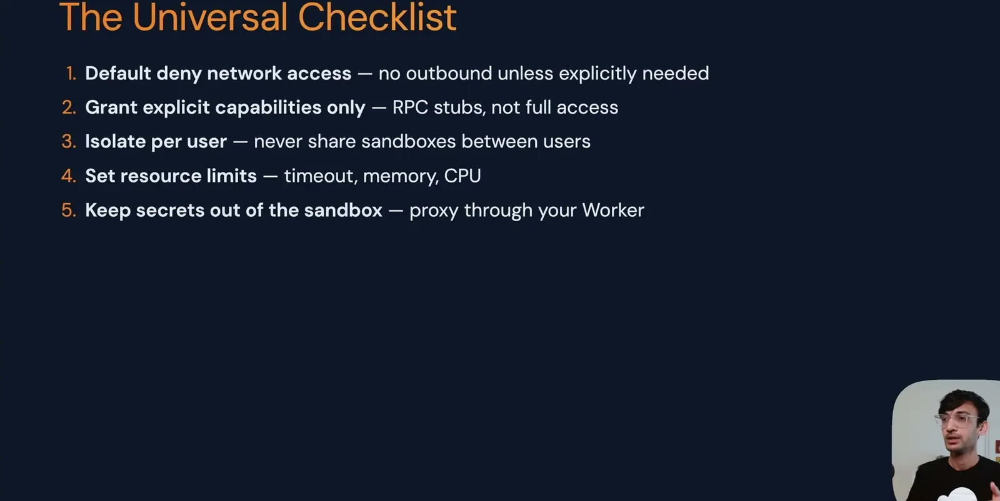
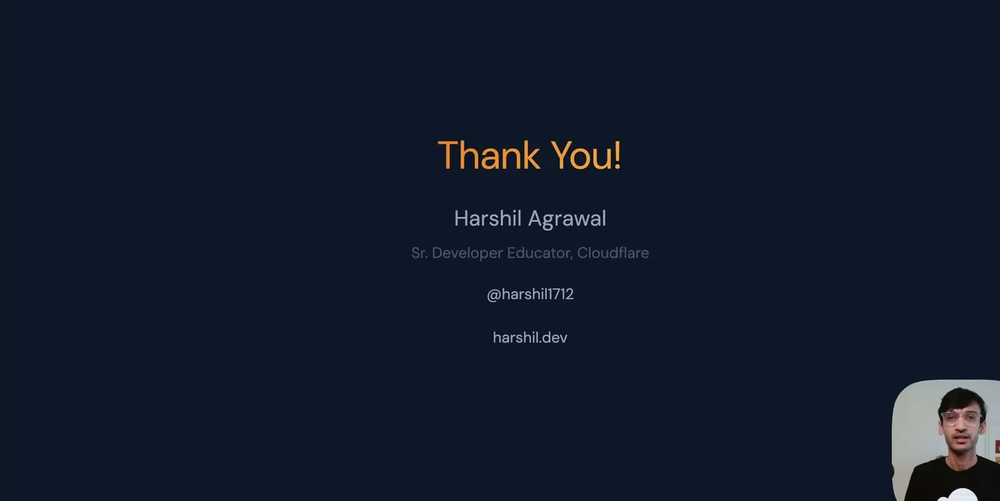
| Stance | Claim | t |
|---|---|---|
| warns | Running LLM-generated code in production with app credentials is functionally the same as running untrusted code from the internet. | 01:35 |
| warns | Non-malicious hallucination alone (bad imports, missing base cases) is a baseline threat that requires protection even with no bad actors involved. | 03:08 |
| warns | An LLM trying to be helpful while configuring something like a database connection can read API keys, database credentials, and secrets it was never asked to access. | 04:11 |
| recommends | Security for AI-generated code should default-deny everything and explicitly grant only the specific capabilities needed, rather than trying to enumerate and block dangerous operations. | 08:27 |
| recommends | Whether to use a lightweight isolate or a full container should be decided by a single question: does the code need a file system, processes, or package installs. | 31:23 |
| recommends | Each user must get their own sandbox with the user ID as the isolation boundary, and sandboxes should never be shared between users. | 26:08 |
| recommends | Secrets an AI-generated app needs for external API calls should be kept out of the sandbox entirely by proxying the request through the application's own worker. | 27:44 |
| asserts | Following all eight items on the closing sandboxing checklist puts a team in a better security position than 95% of AI applications currently running code. | 35:01 |
Machine-readable copy embedded in this page (script#ontology) and in the corpus ontology.